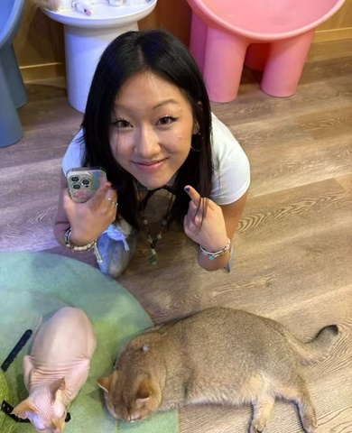

基本信息
1-page Resume (Encouraged，PDF格式，中英文均可)
Portfolio or Additional Files (Optional，PDF或视频)
请把文件名命为：first name_Last name_netid
请上传一张自己的照片，普通的生活照就可以！（只是为了面试的时候我们可以把你认出来）

查看原图
查看原图
通用问题部分
为什么想要加入CSSA？
我在美高时曾担任 CSSA 的 President。记得在中秋晚会上，和朋友们边流泪边合唱《荷塘月色》；也记得在新年晚会上，和同学们煮饺子，抢红包时的欢笑。我曾陪伴一百多位远离家乡的中国学生，在他们最想家的时候，带来温暖与归属。我希望把这份爱与陪伴继续带到 Cornell，传递给更多的国际学生。
你心目中CSSA是个什么样的组织？
在我心里，CSSA 就是我在美国的家。不管在海外留学待了多久，每到过节或者想家的时候，我总是想回到中国同学身边，大家一起吃顿中餐，就能让我感受到家乡的温暖。对我来说，CSSA 永远是一个能让我被理解、被倾听的地方，也是我在最想家、最脆弱的时候能找到陪伴的地方。
加入CSSA之后，你最想在康奈尔校园内实现的事情是什么？
在高中当 CSSA president 的时候，我主要负责活动组织。每次看到同学们因为月饼、红包这些小惊喜而开心，我都特别有成就感。到了 Cornell，我不光想继续办活动，也想用自己的设计和沟通能力，让更多人参与进来，找到家的感觉。
宣传部
如果申请宣传部，我们强烈建议提交一份作品集（max 2 pages）。
如有公众号排版、社交媒体运营或其他相关经历，请在下方文字框内粘贴相关公众号文章链接、作品链接，或进行补充说明。
1）我今年暑假在超媒体（Meta Media）的 ZiWU 誌屋 和 iWeekly 周末画报实习时用秀米写的、排版并发布的微信公众号文章。Examples & links attached in the pdf above.
2）这些是我在小红书上宣传的posts：
- 67 【西太后之所以是西太后 - ZiWU誌屋 | 小红书 - 你的生活兴趣社区】 😆 sOlK6Q3qroFA0dd 😆 https://www.xiaohongshu.com/discovery/item/688b161f0000000023021a3b?source=webshare&xhsshare=pc_web&xsec_token=AB6GdCAhicbqIo5VxV1NXuPZZLa6ACHn95gVMR2heSXSI=&xsec_source=pc_share
- 46 【香奈儿 《ARTS & CULTURE》推出首期杂志 - ZiWU誌屋 | 小红书 - 你的生活兴趣社区】 😆 d97feOssBPn4Izo 😆 https://www.xiaohongshu.com/discovery/item/6875fd33000000002203c9a0?source=webshare&xhsshare=pc_web&xsec_token=ABj8Z8NjNrNh7ENSpPX3LRbP13umj1Z8tIYo3DrP5djsQ=&xsec_source=pc_share
- 54 【在张园看叶锦添摄影展：平凡中的不平凡 - ZiWU誌屋 | 小红书 - 你的生活兴趣社区】 😆 4AUxBXoCuC1z1oQ 😆 https://www.xiaohongshu.com/discovery/item/6886ebb3000000002001bd4f?source=webshare&xhsshare=pc_web&xsec_token=ABzhEhICUkEiwSBrCiUSVpCb7U1M0UBJ4Z9dsdjGmYN54=&xsec_source=pc_share
3）我在高中时也担任 Ecoleaders 和 CSSA的小红书 & instagram account manager
4) i'm also a part of the cornell daily sun science section writer (so i have a lot of writing and marketing and designing experience)
- https://www.cornellsun.com/article/2025/03/renowned-environmental-journalist-to-visit-cornell-to-discuss-climate-conservation
- https://www.cornellsun.com/article/2024/11/bridging-cultures-and-crops-cornells-eoa-program-connects-graduate-students-with-hispanic-farmers-in-n-y
第一志愿为什么选择这个部门？
我在高中时就担任过CSSA和Ecoleader 两个社团的ig 运营者。今年夏天，我在杂志社实习，学习如何将自己对时尚与传播的兴趣应用于creating 有趣且吸引all age group的文章。我希望在cornell能继续这个爱好，为CSSA制作更有吸引力的推文，并不断提升自己的能力！
内联部
第二志愿为什么选择这个部门？
就像我之前提到的，我想加入 CSSA，是因为在高中担任 president 时，体会到能给别人带来“家”的感觉时的那份开心和自豪。我也希望把这份温暖继续带给更多国际学生。我很喜欢去年 CSSA 举办的中秋和新年活动，也想把这样的体验延续下去！
是否接受部门调剂？
是